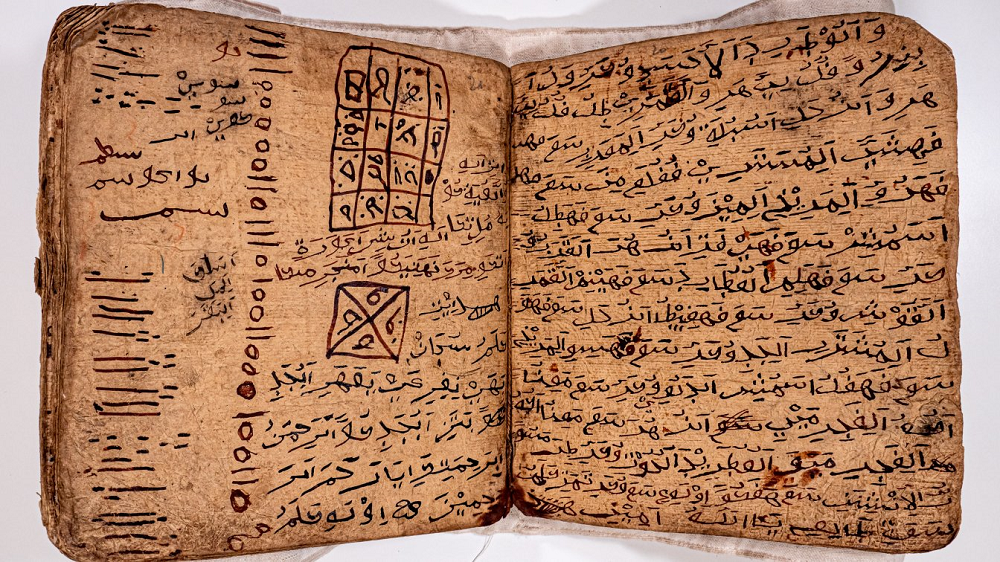

Home > Blog The Log of a Librarian > The Shape of Memory (08)
The Shape of Memory (08)
What the Page Does Not Contain
Sorabe Manuscripts and Antemoro Knowledge in Madagascar
This post is part of a series that explores the many ways human societies have stored, transmitted, and transformed memory across time, beyond the narrow histories centered on books and writing. It approaches archives, documents, and memory systems as historically situated technologies shaped by power, ecology, material conditions, and cultural worldviews, while examining forms of transmission often excluded from dominant narratives of literacy and preservation: oral traditions, woven patterns, musical structures, ritual performances, landscapes, bodies, and other living infrastructures of memory. Check all the posts in this section's index.
A Manuscript from Southeastern Madagascar
Writing is often described as a way of separating knowledge from the circumstances in which it was produced. A spoken account depends on a speaker and an audience; once written, the same words can in principle travel elsewhere and survive the people who first used them. Much of the history of books depends on this possibility. Manuscripts can be copied, collected, inherited, translated and eventually placed in libraries far from the communities in which they originated.
The sorabe manuscripts of southeastern Madagascar complicate this familiar, simple history. They are written documents in the most ordinary sense: sheets bearing visible characters that can be copied and preserved. Yet the knowledge associated with them was historically maintained through a broader system involving specialist readers, oral instruction, restricted transmission and forms of authority that were not themselves contained in the writing.
Sorabe is the name generally given to a tradition of writing the Malagasy language in an Arabic-derived script. It is particularly associated with the Antemoro people of southeastern Madagascar and with the lower Matatàña region, where an Antemoro kingdom emerged around the end of the fifteenth century. The tradition contains historical and genealogical narratives as well as divinatory, calendrical, ritual and medico-magical materials. Some manuscripts remain in Antemoro custody; others have entered public and private collections in Madagascar and abroad. Scholars have studied them since at least the nineteenth century, although the history of the tradition, and especially the routes through which Arabic writing reached southeastern Madagascar, remain subjects of debate.
Sorabe therefore offers something more interesting than the survival of an unusual script. It provides a case in which writing and knowledge never became completely identical.
Writing Malagasy with Arabic Letters
Madagascar occupies a distinctive place in the history of the Indian Ocean. Malagasy is an Austronesian language, closely related at a deep historical level to languages spoken in Island Southeast Asia, while the island also developed long-standing connections with eastern Africa, the Comoros and Islamic trading networks of the western Indian Ocean. Languages, religious practices, technologies and forms of material culture reached Madagascar through these connections at different moments and by different routes.
Sorabe belongs to that history, although its beginnings cannot be reconstructed with the precision once claimed for them. Earlier studies frequently attributed the tradition to Arab immigrants who had settled in Madagascar between the eleventh and thirteenth centuries. Ludvig Munthe presented such an explanation in his survey of Arabico-Malagasy writing published in 1977. Later research, including work by Philippe Beaujard and Silvia Neposteri, has treated both the chronology and the identities of the groups involved more cautiously, placing the development of the Antemoro tradition within a more complicated history of Islamized migrations and Indian Ocean connections.
What is certain is that Arabic graphic forms were adapted to the Malagasy language. Sorabe is therefore part of the broad family of writing practices often described with the Arabic term ʿajamī: the use of Arabic script for languages other than Arabic. The process required more than replacing one alphabet with another. Malagasy contains sounds and grammatical structures for which ordinary Arabic orthography was not designed, and the resulting system developed conventions adapted to local linguistic needs.
The term sorabe is usually glossed as "large writing" or "great writing," from Malagasy soratra, writing, and be, large or great. Whatever the exact history of the name, the script became associated with a specialized written culture rather than with universal literacy. When the Merina ruler Radama I adopted a Latin-based orthography for Malagasy in 1823, Sorabe already represented an older written tradition on the island.
Its subsequent history was not simply one of replacement. Latin script became the principal basis of modern written Malagasy, but Sorabe continued within Antemoro contexts because its importance did not depend only on its usefulness as an alphabet.
The People Who Could Read the Manuscript
The manuscripts were historically connected with particular social groups and specialists. Beaujard's study of Antemoro Sorabe emphasizes their preservation among aristocratic groups and their use by religious leaders and diviner-healers. The writing belonged to a highly stratified intellectual environment in which access to certain texts and forms of knowledge could be restricted.
The katibo, generally described as scribes or learned specialists, were particularly important in this system. Their role involved more than the mechanical ability to reproduce characters. Manuscripts formed part of a body of learning acquired through transmission between people who already possessed the cultural and technical competence necessary to understand them. Other specialists, including ombiasy, worked with divinatory, healing and ritual knowledge that could also intersect with written materials.
Being able to read the script did not necessarily provide the knowledge required to interpret a particular manuscript. A written formula could preserve words while leaving unstated the circumstances in which it should be used, while a genealogy might record names without explaining the relationships and claims that gave those names social force.
Beaujard describes the knowledge of sacred Sorabe texts as inseparable from knowledge transmitted orally. The manuscript participated in transmission, but it did not replace oral teaching.
This relationship between writing and specialist knowledge is also central to Neposteri's recent work. Her studies of the Sorabe tradition examine the interaction of written memory, oral memory and what she describes as "incorporated memory," particularly through the figure of the katibo and the continued copying and interpretation of manuscripts.
Sorabe therefore does not fit comfortably into an opposition between literate and oral societies. Writing existed alongside oral transmission, and the two performed different tasks within the same intellectual system.
History, Genealogy and Specialist Knowledge
The surviving manuscripts contain different kinds of material, and no single description covers the tradition adequately. Historical and genealogical texts form one important group. Others concern divination, astrology, calendrical calculation, ritual action and healing.
Narivelo Rajaonarimanana's study of the tradition of the Anakara (one of the Antemoro groups possessing particular religious prerogatives) remains fundamental for the latter materials. His Savoirs arabico-malgaches examines Sorabe divinatory treatises and medico-magical recipes maintained among Antemoro Anakara specialists. Beaujard likewise notes the prevalence of magico-religious materials among surviving manuscripts, alongside a smaller but important group of historical texts.
The historical manuscripts present a different problem. They can preserve information unavailable from European documentation, but they were not written simply to provide neutral chronicles for future historians. Genealogy and history participated in claims about origins, status and authority. Neposteri's study of historical Sorabe has shown how Antemoro noble groups used writing to connect past and present in ways that helped maintain particular relations of political and cultural power.
A recently edited example makes this especially visible. The manuscript known as HB6, now held in the Berthier collection of the Académie des Sciences d'Outre-Mer in Paris, preserves an account of the Anakara. Neposteri's edition provides transcription, transliteration, translation and commentary, allowing the manuscript to be studied alongside other Sorabe historical traditions.
HB6 is useful because it prevents Sorabe from becoming an abstract category. Here is a specific manuscript carrying an account of ancestry and collective history. Its value does not lie solely in the events that modern historians might extract from it. The act of maintaining such a genealogy also contributed to the reproduction of the social order in which the genealogy mattered.
An earlier historical manuscript demonstrates the same problem from another direction. In 1907, E.-F. Gautier and Henri Froidevaux published an Arabico-Malagasy account of military events involving the French adventurer known as La Case in the Imoro region between 1659 and 1663. Their edition treated the manuscript as an important Indigenous historical source and attempted to distinguish different sections and possible authors within it. Although their language and assumptions belong clearly to colonial scholarship of the period, the manuscript showed that Antemoro writers had recorded political and military events from perspectives that did not depend upon European observers.
The surviving historical corpus consequently gives us more than written evidence about Madagascar. It also records choices about what particular communities considered worth preserving and how the past could be mobilized in the present.
The Manuscript and the Copy
Sorabe manuscripts also belonged to a material history.
Gabriel Rantoandro's study of what became known as "Antemoro paper" traced a local paper-making tradition documented from at least the early modern period and associated with the bark of havoha. He was careful not to claim certainty about the route through which the technique reached Madagascar, noting possible Indian Ocean connections while emphasizing the incompleteness of the evidence.
The paper was historically associated with written and magico-religious uses. During the twentieth century its production changed substantially, especially as "Antemoro paper" became a decorative and commercial product. Rantoandro's account is useful because it separates the history of the material from the much later tourist and craft object now widely sold under the same name.
For manuscripts, the important point is less the exoticism of handmade paper than the labor required to maintain written continuity. Organic materials deteriorate, manuscripts can be damaged or lost, and long-term survival may depend upon copying as much as upon storage.
Recent descriptions of the Sorabe tradition repeatedly emphasize this activity. Neposteri describes manuscripts preserved through successive acts of copying and addition by relatively restricted groups of initiates. A textual tradition can therefore continue even when no individual physical object survives from its earliest period.
Copying also complicates the idea of a manuscript as a stable endpoint. Each copy is another moment in transmission. Material can be reorganized, supplemented or combined with other material. The text acquires continuity through repeated human intervention rather than by remaining physically unchanged.
That process resembles other manuscript cultures, but in Sorabe it operated alongside restrictions on access and specialist interpretation. The person copying the manuscript was therefore also participating in the preservation of a social competence.
From Custodian to Collection
Sorabe manuscripts began entering European scholarly and institutional collections during the colonial period and earlier. By the late nineteenth and early twentieth centuries, researchers were transcribing, translating and publishing them as linguistic, historical and ethnographic sources. Gabriel Ferrand, G.-H. Julien, Gautier and Froidevaux, and later scholars produced editions and studies that made individual texts accessible outside Antemoro networks.
This scholarly work preserved information and made comparison possible, but it also altered the documentary environment of the manuscripts. A text held within a lineage or specialist network could now be separated from the people responsible for transmitting it. In a library or scholarly edition, it acquired new descriptive categories: manuscript, linguistic specimen, historical source, religious text.
The same manuscript can legitimately be studied in several ways. The difficulty arises when physical possession and textual legibility are assumed to provide complete access to what the document once did.
A historical genealogy can be translated while the relationships of precedence or authority that gave it force are no longer available to the reader. A ritual text may be accurately transcribed while the practical knowledge surrounding its use remains outside the edition. The written content survives, but its earlier documentary functions must be reconstructed through other kinds of evidence.
This is why Sorabe scholarship has increasingly combined textual analysis with oral history, ethnography and attention to social organization. The manuscript cannot simply be isolated from the people who maintained it.
Sorabe in the Present
Sorabe is not solely a historical tradition preserved in old collections. Field research continues to encounter manuscripts and custodians in southeastern Madagascar.
Neposteri's recent work provides an especially useful case. During field research in the Antemoro region in 2015, she assembled a digital corpus of forty-six manuscripts. Her study of that corpus examines the methodological and ethical problems created by digitizing materials whose transmission has historically involved secrecy, restricted access and particular forms of custodianship.
Digitization can document manuscripts without permanently removing them from their owners, permit comparisons among materials dispersed across different collections and reduce repeated handling of vulnerable originals. It can also make previously inaccessible sources available for linguistic, historical and codicological study.
At the same time, digital availability changes the conditions of access. A manuscript once seen by a small number of specialists can potentially circulate far beyond that social setting. Neposteri therefore treats digitization as a question involving cultural and epistemological consequences as well as technical possibilities.
For the history of the book, the case reveals a distinction that existed long before digital technology. A document can be reproduced more completely than the knowledge practices associated with it. High-resolution photography can capture every visible character on a page, but it cannot by itself recover the oral explanation through which a specialist learned to interpret a passage, determine the social authority of a genealogy, or establish the circumstances in which a particular text could be used.
Those limitations do not make the digital copy defective. They identify the limits of what was ever stored in the page.
What the Page Does Not Contain
Sorabe belongs fully within a history of writing and manuscripts. Its importance does not depend on treating it as something outside or prior to the book. Antemoro specialists wrote, copied, preserved and interpreted texts over generations, developing a documentary tradition with its own material forms and intellectual conventions.
What makes that tradition especially useful for a broader history of memory is the distribution of knowledge between manuscript and practitioner. Some information could be fixed in writing and transmitted through copying, while other knowledge remained dependent on oral explanation, training, social position and continuing relationships among custodians. Written durability did not make the text entirely independent of those conditions.
That distinction becomes difficult to see once manuscripts enter modern collections. Libraries can preserve objects, and philology can reconstruct texts with extraordinary precision, but neither activity necessarily preserves the complete set of practices through which an earlier community made a document meaningful.
Sorabe therefore adds a particular complication to the history of the book. Writing can allow knowledge to outlive individual people without transferring everything required to understand that knowledge into the written object.
Sometimes the page contains only part of what has been preserved.
Bibliography
- Beaujard, Philippe (2007). "Les manuscrits arabico-malgaches (sorabe) du pays Antemoro (Sud-Est de Madagascar)." In Constant Hamès (ed.), Coran et talismans. Textes et pratiques magiques en milieu musulman. Paris: Karthala, pp. 219–265.
- Gautier, E.-F. and Henri Froidevaux (1907). Un manuscrit arabico-malgache sur les campagnes de La Case dans l'Imoro de 1659 à 1663. Paris: Imprimerie Nationale / C. Klincksieck.
- Julien, G.-H. (1929). "Pages arabico-madécasses. Première série: Histoire, légendes et mythes." Annales de l'Académie des Sciences Coloniales, 3, pp. 1–124.
- Munthe, Ludvig (1977). "La tradition écrite arabico-malgache: un aperçu sur les manuscrits existants." Bulletin of the School of Oriental and African Studies, 40 (1), pp. 96–109.
- Neposteri, Silvia (2017). Memoria e potere in Madagascar. Tracce di storia nella tradizione arabico-malgascia (XV–XIX secolo). Doctoral dissertation, Università di Pavia / INALCO.
- Neposteri, Silvia (2023). Voici l'histoire de nos ancêtres Anakara. Le manuscrit arabico-malgache HB6. Paris: Geuthner / Académie des Sciences d'Outre-Mer.
- Neposteri, Silvia (2024). "Le sorabe et le katibo. Au carrefour entre passé et présent dans la tradition arabico-malgache sorabe." In Theis Lala Voahangimampionona Rasoloarivony and Alice Ravonjiarisoa (eds.), La littérature malgache. Pour une histoire littéraire inclusive. Antananarivo: École Normale Supérieure, pp. 430–440.
- Neposteri, Silvia (2025). "Sorabe numériques? Enjeux et perspectives d'étude des manuscrits arabico-malgaches à travers le cas d'un fonds numérique inédit." Asian and African Studies, 34 (1), pp. 16–59.
- Rajaonarimanana, Narivelo (1990). Savoirs arabico-malgaches: la tradition manuscrite des devins Antemoro Anakara, Madagascar. Paris: Institut National des Langues et Civilisations Orientales.
- Rantoandro, Gabriel (1983). "Contribution à la connaissance du 'papier Antemoro' (Sud-est de Madagascar)." Archipel, 26, pp. 86–104.